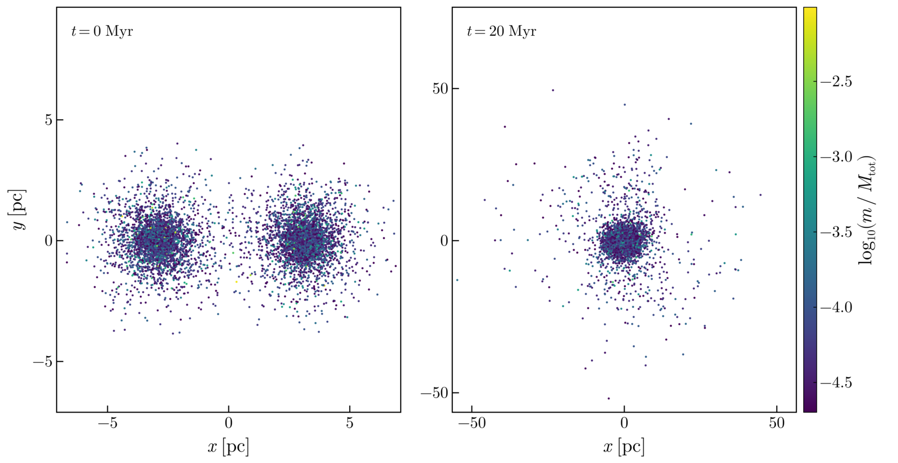

Nbody6Dynamics.jl
A Julia package for automated setup, execution, post-processing, and visualisation of the Nbody6PPGPU-beijing N-body astrophysical simulation code, plus a validated multi-cluster merger initial-condition generator.

Two King clusters of 4000 stars each, released 6 pc apart on an eccentric orbit, and the remnant they leave 20 Myr later, produced end to end by this package.
Features
- Merger IC generation — Multi-cluster initial conditions with validated King (1966) and Plummer samplers (King concentration
c(W0)matches published values to <1%), Kroupa (2001) IMF in natural / rescaled / equal-mass modes, per-cluster virialisation toQ = 0.5, Jacobi truncation, Kepler or explicit orbit placement, anddat.10+merger.inpoutput forKZ(22)=2 - Pipeline orchestration — Single
run_pipeline(cfg)entry point driven byconfig.toml: install/build → merger ICs → simulation → post-processing → plots, each phase independently switchable - Install & build — Clone, configure, patch (HDF5 build flags), and compile Nbody6++GPU with auto-detected CUDA/MPI
- Simulate — Unique run IDs, frozen config snapshots, isolated
runs/<run_id>/directories, real-time ADJUST monitoring - Post-process — Readers for
conf.3_*snapshots (Fortran binary), stdout diagnostics (out1000), Lagrangian radii (lagr.7), escapers (esc.11), and stellar evolution (sev.83_*) - Visualise — Static figures and GIF animations with CairoMakie, including merger-specific diagnostics (inter-cluster separation, per-cluster virial ratio, IC overview plots)
- External post-processing — Config-free
postprocess_external(dir)for arbitrary Nbody6++ output directories, with automatic file discovery viascan_output - Tests — Unit tests against real output fixtures (
out1000,lagr.7,esc.11,sev.83) plus physics validation (King concentration, Plummerr_hm = 1.305a, Kroupa mean mass, virialisation, Kepler/Jacobi relations)
Quick Start
As a dependency of your own project (the package is not registered):
using Pkg
Pkg.add(url = "https://github.com/PaulGoG/Nbody6Dynamics.jl")
Pkg.add("CairoMakie") # the figure backendThe directory of your config.toml is the project directory: the engine is built under its backend/ and runs land under its runs/. example_input("showcase/equal_pipeline.toml") returns a shipped configuration to copy and edit.
From a checkout:
cd Nbody6Dynamics.jl
# Install Julia dependencies (one-time)
julia activate.jl # package environment
julia scripts/activate.jl # entry scripts: the package plus its figure backend
# Edit configuration
$EDITOR config.toml
# Run the full pipeline
julia scripts/run_setup.jl config.tomlThe figure routines are a package extension (see Visualisation): a session that produces figures loads a Makie backend first, a numerics-only session needs neither the backend nor its dependencies.
using CairoMakie
using Nbody6Dynamics
run_pipeline(load_config("config.toml"))Usage Modes
| Mode | Settings |
|---|---|
| Full pipeline | install.enabled=true, simulation.run_test=true |
| Simulate only | install.enabled=false, simulation.run_test=true |
| Postprocess only | simulation.run_test=false, postprocess.data_dir="..." |
| Re-plot latest run | simulation.run_test=false, postprocess.data_dir="" |
| Merger ICs only | merger.enabled=true, simulation.run_test=false |
| Merger + simulate | merger.enabled=true, simulation.run_test=true |
Programmatic API
using Nbody6Dynamics
# Full pipeline from config
cfg = load_config("config.toml")
results = run_pipeline(cfg)
# One-call merger IC generation (no config.toml needed)
result = run_merger_pipeline("input_files/merger_demo_small.toml")
# Post-process an external output directory directly
results = postprocess_external("/path/to/output")
# Quick scan of available output files
scan = scan_output("/path/to/output")
println(scan)
# Reload a previously generated merger IC (no re-sampling)
result = load_merger_ic_result("runs/merger_run_.../output")See the API Reference for the complete public interface.
Contents
- Nbody6Dynamics.jl — User Manual
- Input File Reference
- Multi-Cluster Merger Simulations
- Entry points
- Scientific context
- Density profile samplers
- IMF sampling
- Per-cluster scaling and virialisation
- Primordial binaries
- Orbit placement
- Jacobi truncation
- Units and output files
- Reloading ICs —
load_merger_ic_result - Running and diagnosing merger simulations
- Parameter sweeps
- Control runs
- Feasibility and limitations
- Showcase configurations
- Verification configs
- Related work
- API Reference